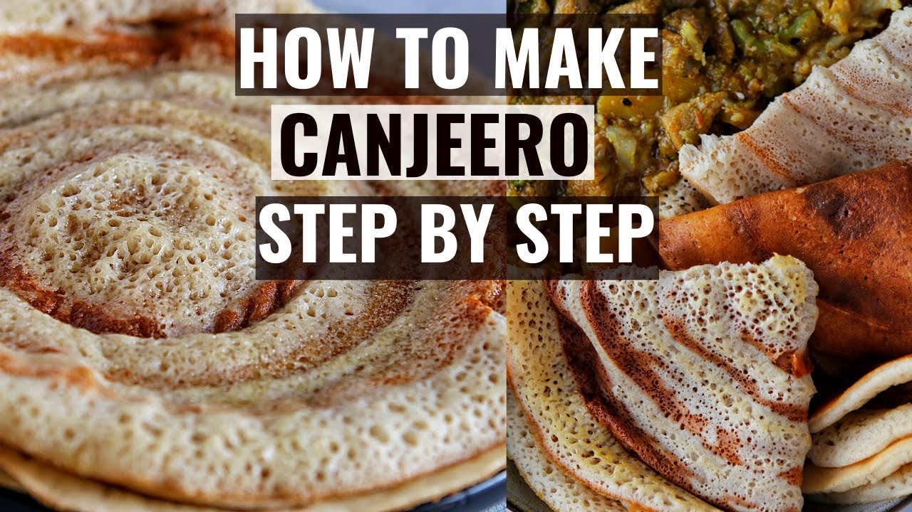

Canjeero

Description
Lahoh is a type of flat bread eaten regularly in Somalia, Djibouti, Ethiopia and Yemen.In Somalia, Djibouti, and in parts of Ethiopia and Kenya, for breakfast (which is where Lahoh is typically eaten), it is consumed with subag (a Somali butter/ghee), olive oil, sesame oil, and sugar or honey or “beer” (liver and onions), “suqaar” (stir-fry meat), or with “odkac/muqmad”. Occasionally it is eaten for lunch, which is when it is eaten with a Somali stew, soup, or curry. It is almost always consumed with Somali tea.
Ingredients
- 1 cup white corn flour
- Half a cup of sorghum flour
- 1 tablespoon of instant dry yeast
- 4 cups of self-raising flour
- 1 teaspoon of salt
- 4 cups of lukewarm water
Steps
- n a large bowl, mix the white corn meal, sorghum flour, yeast and half of the water, making sure it is properly combined. Leave for one hour.
- After one hour add in the self-rising flour and sugar, then slowly start adding the remaining water as you mix to get a smooth, lump-less texture for your batter.
- The key to achieving the classic anjero taste is fermentation. The mix should rest in a warm place to allow the fermentation to take place. The minimum time would be a few hours but to achieve a more authentic, sour anjero taste, you can let the batter ferment for up to two days. For this recipe you can let the batter ferment overnight.
- In a non-stick frying pan on a medium heat, ladle the batter mix into the pan according to preferred portion size, making sure that the batter spreads fully across the surface of the pan.
- Cover the pan and cook for a few minutes per portion. The desired colour is a golden brown, and the texture should be spongy with no liquid remaining.
- Plate the pancake and continue process until you each person has around 3 each.
- Refrigerate leftover batter and use for lunch or for tomorrow's breakfast.
- And bravo! You've made yourself a beautiful set of canjeero!
Back to Homepage